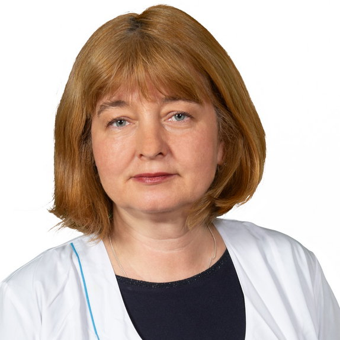

«АЙБОЛИТ» — это сеть ветеринарных центров в Москве, оказывающих ветеренарные услуги для собак, кошек и других домашних животных. У нас в клиниках новейшее оборудование, квалифицированный и вежливый персонал. Мы будем рады вас видеть, Добро пожаловать!
НАШИ КЛИНИКИ:
ул. Рословка 14

ул. Покровка 8
ул. Лесная 8
НАШИ ПРЕИМУЩЕСТВА:
Качество!
Цена!
Скорость!
Вежливость!
НАШ ПЕРСОНАЛ:
д.н. Елена
к.н. Адольф

к.н. Юлия
к.н. Юлия
О КЛИНИКЕ:
В густонаселённой столице актуальность «больницы для животных» бесспорна. В огромном городе есть много небольших клиник и кабинетов, оказывающих ветеринарные услуги, но важность крупных, хорошо оснащенных центров очевидна.
Далеко не каждая клиника имеет возможность качественно проводить комплекс исследований для диагностики тех или иных заболеваний. Очень часто путь к постановке правильного диагноза долог и тернист. Бывает, что владельцы безуспешно лечат своих животных месяцами, не имея возможности выяснить причину того или иного состояния. Печально, но зачастую такие случаи заболевания животного заканчиваются летальным исходом. А владельцы так и не узнали, от чего лечили своего любимца или хотя бы правильно ли пытались ему помочь.
Конечно, главное — это ветеринарный ВРАЧ.
Ветеринарные центры «АЙБОЛИТ» работают на тех же принципах, что и в случае человеческой медицины — любое заболевание должно быть подтверждено диагностическими исследованиями.
Многие небольшие ветклиники не могут позволить себе дорогостоящее оборудование для диагностики или открытие собственной лаборатории и предпочитают лечить «наугад». В таких случаях, если болезнь определена не точно, или же врач думает, что у животного другое заболевание, лечение скорее будет наносить вред, чем приносить пользу.
Любой ветеринарный центр, входящий в сеть «АЙБОЛИТ» отличается тем, что в наших лечебных учреждениях любой диагноз должен быть подтвержден дважды! Для этого в центрах предусмотрен весь спектр диагностического оборудования, начиная от своей лаборатории и заканчивая рентген-аппаратами.
Далеко не каждая клиника имеет возможность качественно проводить комплекс исследований для диагностики тех или иных заболеваний. Очень часто путь к постановке правильного диагноза долог и тернист. Бывает, что владельцы безуспешно лечат своих животных месяцами, не имея возможности выяснить причину того или иного состояния. Печально, но зачастую такие случаи заболевания животного заканчиваются летальным исходом. А владельцы так и не узнали, от чего лечили своего любимца или хотя бы правильно ли пытались ему помочь.
Конечно, главное — это ветеринарный ВРАЧ.
Ветеринарные центры «АЙБОЛИТ» работают на тех же принципах, что и в случае человеческой медицины — любое заболевание должно быть подтверждено диагностическими исследованиями.
Многие небольшие ветклиники не могут позволить себе дорогостоящее оборудование для диагностики или открытие собственной лаборатории и предпочитают лечить «наугад». В таких случаях, если болезнь определена не точно, или же врач думает, что у животного другое заболевание, лечение скорее будет наносить вред, чем приносить пользу.
Любой ветеринарный центр, входящий в сеть «АЙБОЛИТ» отличается тем, что в наших лечебных учреждениях любой диагноз должен быть подтвержден дважды! Для этого в центрах предусмотрен весь спектр диагностического оборудования, начиная от своей лаборатории и заканчивая рентген-аппаратами.
КОНТАКТЫ:
|
г. Москва, ул. Двинцев, 3 строение 4
Режим работы: Пн-Пт 10:00 - 22:00 Сб-Вс 11:00 - 21:00 Телефоны: +7 (916) 123-23-23, +7 (916) 122-11-23, +7 (916) 111-11-23, +7 (977) 555-11-55 Почта: lublucobak@google.com Мы в соцсетях: 


|